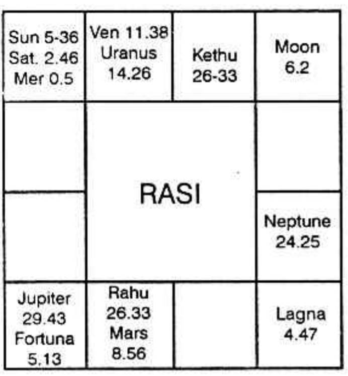
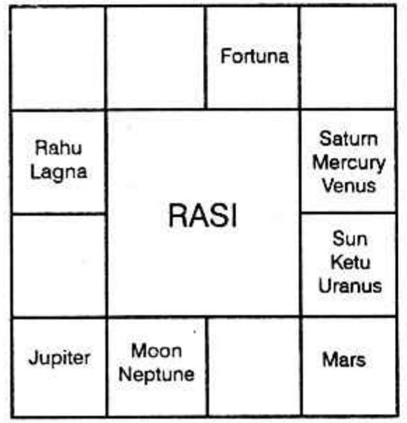
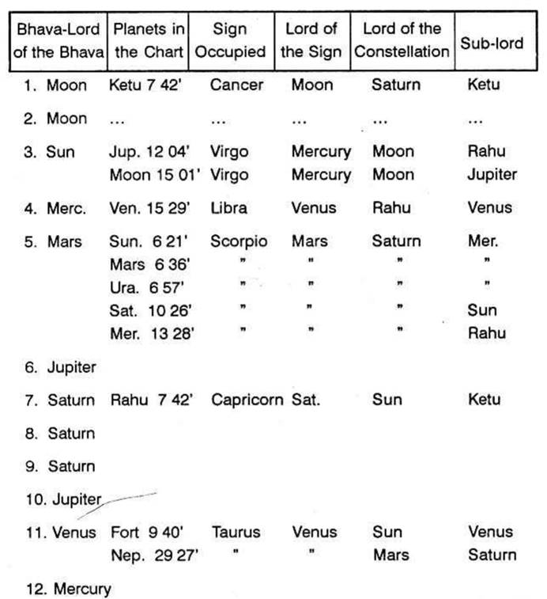

Count from Lagna or from the Moon sign and note which planets occupy the tenth house. One can acquire wealth through father, if Sun is in the 10th house. Moon in 10 indicates wealth through mother: Mars shows that which he gains through foe.
Similarly Mercury through friend. Jupiter through brother; Venus through wife; Saturn through servants.
Find out the lords of the 10th house counted from Lagna, Moon and Sun. judge the strongest of the lords. Note in which navamsa sign, the strongest of the lords of the 10th house is counted from Lagna, Sun or Moon. Then find out who rules the Navamsa sign. This lord is the indicator of the profession."
But Bhattotpala is of opinion that one should not make a selection among the lords of the 10th house counted from Lagna, Sun and Moon and among the occupants of the 10th house counted from Lagna and Moon sign. All must be taken for consideration. Sage Garga holds this view and Bhattotpala supports this.
If the navamsa sign is owned by
(a) Sun: medicine, wool, grass, water, grain, gold, pearls, respectable post under the government including ministers.
(b) Moon: dealing in things derived from water, agriculture, earth, indulging in controversial matters, apparel etc.
(c) Mars: metallurgy, war, robber, using fire, daring action etc.
(d) Mercury: arts, poetry, astrology, vedas to recite mantras for the benefit of others, priests, etc.
(e) Jupiter: teacher, purohit, law etc.
(f) Venus: gold, ruby, elephants, horses, cattle, jaggery, cooked rice, salt, curdled milk, female, etc.
(g) Saturn: woodcutter; carpenter, servants, etc.
Beneficial planets owning the Navamsa sign occupied by the lord of the 10th house in the Navamsa chart shows that the person will be beneficial to others. He will have authority. But malefic planets owning the Navamsa sign, indicates that the person is evil minded or a hard task - master and he has to serve another.
If the tenth house from Moon is occupied by
(a) Sun: the person is successful in his enterprises.
(b) Mars: he will be wicked and rash.
(c) Mercury: he will be learned.
(d) Jupiter: he will be royal.
(e) Venus: he will be voluptuous.
(f) Saturn: he will be pessimistic.
Sun in conjunction with Mars
He will be addicted to wine and women.
Sun in conjunction with Mercury
Astrology, valuable articles obtained from liquids, ladies and jewels.
Sun in conjunction with Jupiter
Respected by Government.
Sun in conjunction with Venus
Favour from Government, wife with good wealth.
Sun in conjunction with Saturn
He will be depressed and dejected.
Mars in conjunction with Mercury
He will be a scientist.
Mars in conjunction with Jupiter
He will dominate over others.
Mars in conjunction with Venus
Foreign trade.
Mars in conjunction with Saturn
Bold action. Fearless job.
Mercury in conjunction with Jupiter
He will be famous and favoured by Government.
Mercury in conjunction with Venus
He will be learned and will earn wealth.
Mercury in conjunction with Saturn
He will be copyist, dirty job.
Jupiter in conjunction with Venus
He will be helpful to good - natured people, respected by Government and learned.
Jupiter in conjunction with Saturn
Mischief monger, promoter of quarrels.
Venus in conjunction with Saturn
He will manufacture fragrant powder, cosmetics, will practise medicine and do business.
If Mars and lord of the 4th house are in 1, 4, 5, 7, 9, 10 or 11th house and if the lord of the tenth house is conjoined with or aspected by, Venus and Moon, the person will have cattle and will attend to agriculture.
Thus, an idea is given by Vaidyanatha Dikshita in Jataka Parijata.
Let us refer Mantraeswara's Phala Deepika. He also advocates to note the lord of the navamsa occupied by the strongest of the planets owning the 10th house counted from Lagna, Moon and Sun. if the lord were to be.
Sun: Fruit trees, Mantras, by fraudulent action or by gambling, by speaking untruth, dealing in wool, medicine, metals, Government service or service under some noble person.
Moon: Business, pearls, corals, agriculture, cattle, farming, pilgrimage, serving a damsel, textiles.
Mars: Metals, Military service, cooking, agriculture, gold, troubling or black - Mailing others, weapons, bold actions, wicket company, spy, theif.
Mercury: poet, reader, clerk, magician, astrologer, vedanthi, priest etc,
Jupiter: Favour from good people, Government service, reciting mantras and Puranas, studying sastras, money - lending, Law.
Venus: Women, cows, buffaloes, elephants, horse, dance, silver, scents, silk, milk, jewels, Aid de - Camp, Kavi.
Saturn: fruits, labour, serving with low morality, bad grains, cooly, dirty jobs, sculpture, carpenter, butcher, etc.
The Place of acquiring wealth is indicated by the sign representing the tenth house or the navamsa sign occupied by the ruler of the 10th house.
A person can make money in his own place if the 10th sign is occupied by its owner or at least aspected by him. If the lord of the 10th rasi occupies in Navamsa, a fixed sign he earns in his own place. If this navamsa sign receives aspect from planets other than the owner, the native will earn money in a foreign place.
If we take a twin birth, we find one looks after agriculture and remains in the village, whereas the other roams about and like a rolling stone does a variety of service and never stays in one place.
Take another twin birth were the Lagna, the position of Sun and Moon should be the same for both. The lord of the 10th house would also be the same. The Navamsa sign occupied by it would also be the same. Yet, one is a very famous medical practitioner remaining in his own residence and making money, whereas the other twin brother is an advocate, an orator, a vice chancellor, an educationist and an industrialist moving from one place to another and earning in all places which he visits and wherever he stays.
Let us take another twins birth at Delhi. One is a Government official and the other is a speculative businessman.
Suppose the parents of the twins show both the horoscopes, how will you predict:
(a) in which college-medical, engineering, arts or technical, they will get admission?
(b) which profession they will have?
Mind you, there is no choice for the individual. Planets portray. They promise whatever they presage. That alone will happen. When one is doubtful because he himself is not sure of anything, one may offer advice and say that he may study medicine. But if the boy is keen; he may join engineering; if he does not like either, put him in arts college. But if you follow the principles propounded by Krishnamurti, you can predict only that which is to happen. Elimination is easy. Fixation is simple. Rules are very clear. Result is correct. No laborious calculation for days is needed on one horoscope. It is after all a matter of a few minutes.
Let me state very very briefly the combinations etc., to fix a profession. It will give the readers an idea about the method.
1. Study what each sign indicates e.g.
Aries: Police, Defence, Military, Industry, Land Brick kiln, Soldiers, Surgeons, Chemists, those who deal in metals, iron, steel, etc., butchers, barbers, cooks, those who use sharp instruments, etc., (These details are available to the student in the first Reader).
2. Understand what each planet denotes, as for instance –
Jupiter: Law, administration, religion, finance, education, physician, judge, political career, production, expansion.
Venus: Music, art, paint, poet, actor, union, flower, scent, silk, milk, embroidery, fancy articles, costly ones, jewels, etc.
Saturn: Land, property, mine, coal, lead, jail, cremation, burial ground, digger, watchman, cooly, etc. (The details are available to the students in the first Reader).
3. Now combine the Rasi and the planet. Aries-Mesha is ruled by Mars. In it there are 2 ¼ stars. First is Aswini, ruled by Ketu. The second is Bharani governed by Venus. The third is Karthikai, lord of which is Sun. Hence, according to Krishnamurti Padhdhati suppose the meridian falls between 20° 6′ 40″ and 21° 53′ 20″ then this area is in the sign Aries owned by Mars, in the star Bharani governed by Venus and the sub ruled by Jupiter. Therefore Mars, Venus and Jupiter indicate his profession. Suppose one is born with the meridian between 21° 53′ 20″ and 24° 0′ in Aries, then Mars rules the sign, Venus the star and Saturn the sub. To note the position of meridian and the lords of the sign, star and sub will not take even a minute. You can invariably find that people working in Animal Husbandry or as a Judge will have some connection between Mars, Venus and Jupiter. Why? Venus and Mars indicate kama and strength and will to unite. Jupiter is the chief governor for progeny. So he will have something to do with Animal Husbandry or work as a veterinary doctor also. Mars indicates authority and power; Jupiter, law and Venus, assessment, Judgement, balancing the merits and demerits of the case. So he can be a Judge. But if the meridian is in the sub of Saturn, Mars-Venus-Saturn show that he works in a slaughter house or deals in skins and hides or manufactures shoes, etc., Why? Mars and Venus indicate “animals”. Saturn is called ‘yama’ the chief governor for slaughter. So he may work in a slaughter-house. Or Venus is for ‘Thejas’-skin (beauty), Saturn denotes the dead, Mars shows industry; an industry dealing in skins and hides.
Hence every point in the zodiac indicates a profession. 21° in Mesha-Aries shows Animal Husbandry. 22 in Mesha-Aries indicates slaughter house.
When a twin is born, having their meridian in this manner it may appear funny when one is told that one of the twins would breed cattle while the other destroy them.
Consider well! For both, the Lagna is the same. The positions of planets etc., do not change in the interval of 5 minutes between the time of birth of one child and the other. But look at the results.
After fixing the meridian, consider in which position the significator of profession is. Suppose Sun is in 21° Aries, then he serves in a place where there is security of service as Sun is to give a steady life; it indicates maximum labour and minimum wages. He may be a Veterinary Surgeon, If Moon is in 21° Aries, then the light of Moon is modified by Mars, Venus and Jupiter. Therefore he may be a captain of a ship, as Moon indicates ocean, Venus the vehicle, Mars, to handle with authority and power, Jupiter to manage and administer. Or one who supplies water to animals. If Mercury is in 21°, Aries, the combination is Mercury, Mars, Venus and Jupiter, when he may be a building contractor, Sanitary Engineer or an Accountant or Clerk in Animal Husbandary or a Law Court-Selection of any of these depends on the strength of a planet. Thus one is to take into consideration.
(a) Which planet signifies one’s profession;
(b) in which sign, star and sub it is;
(c) with which planet it is conjoined; or
(d) by which planet it is aspected.
Above all, note the dasa and Bhukti running.
Never miss to find the position of the Dasa lord and Bhukti lord.
A person may be a teacher to start with, during Jupiter Bhukti. Then he may be a legal adviser in a company dealing with labour during Saturn, Mercury and Ketu, sub periods. Later he can be taken as a Public Prosecutor in Venus sub period. Therefore, the sub periods indicate the changes and one should be careful while passing a judgement.
Further one should apply the mind and select the correct profession. As Aries represents the profession of a surgeon, a barber, butcher etc. can any one be merely following the tradition, simply repeat and recite the Sloka? Every one should know that a barber removes the hair (indicated by Saturn) bring back beauty (by Venus) using sharp instrument (Mars). A butcher is to kill (Saturn stronger than Venus) an animal (Venus) using a sharp instrument (Mars). A surgeon who is allowed to cut open the body, is expected not to kill the patient, but try to end his troubles and not his life. So a Surgeon should have Sun (for medical-Dhanvantry), and Mars (to use a sharp instrument). Therefore the area of Sun in Aswini star or Bharani star and Karthik star in Aries indicates surgeons. The sub of Saturn in Aswini or Bharani indicates butcher. The sub of Venus denotes a barber. See, how clear and convincing it is.
The nature of profession has to be judged by taking into consideration, the strongest significator which promises entry into service or indicate independent business or adding something more to the existing business.
Extensive research has been conducted by the intelligent students of the Modern Astrological Research Institute, Madras and it has been found possible for us to lay down certain grouping or combination of planets to determine one’s profession. The classification is given in brief;
Abrasives (to sharpen stones; grinding wheels etc.): Saturn, Mars, Mercury.
Accounts: Mercury, Jupiter.
Accountant in Military, Police Department or Industry: Mars, Mercury, Jupiter.
Accountant in Bank: Jupiter, Mercury.
Accountant in Shipping: Jupiter, Mercury, Venus, Moon.
Accountant in Hospital: Jupiter, Mercury, Sun.
Accountant in Navy: Jupiter, Mercury, Moon, Mars
Accountant in Mines: Jupiter, Mercury, Saturn.
Accountant in Research Department: Jupiter, Mercury, Uranus.
Accountant in Jail: Jupiter, Mercury, Rahu.
Independent Auditor: Mars very strong.
Acetylene generator: Venus, Mars, Moon.
Acid, Alkali resistant tiles: Venus, Saturn, Jupiter, Mars.
Acid Jars: Venus, Mars Saturn.
Acid Manufacturer: Jupiter, Venus, Moon, Mars
Addressing machine: Mercury, Jupiter, Mars.
Adhesives: Venus, Moon.
Advertising: Jupiter, Mercury
Agricultural implement: Mars, Venus, Mercury, Saturn
Agricultural machinery: Venus, Mercury.
Air compressor: Saturn, Mars.
Air conditioner: Saturn, Mars, Venus
Aircraft instruments: Saturn, Venus, Mars.
Aluminium: Venus, Mars.
Analytical chemist: Mercury, Venus.
Architects: Mars, Venus, Mercury.
Asbestos: Sun, Moon, Mercury.
Astrology: Mercury, Uranus.
Atomic Energy: Mercury, Uranus, Mars.
Auctioneers: Mercury, Jupiter
Automobile: Venus, Mars.
Aviation: Venus, Mercury, Mars.
Ayurvedic medicine: Jupiter, Mars, Venus, Sun
Bakelite: Mars, Venus, Saturn
Ball Bearings: Mars, Sun, Venus, Mercury.
Barbed wire: Mars, Saturn, Venus, Sun.
Batteries: Mars, Venus, Mercury, Moon
Belt: Mars, Venus, Saturn, Moon
Block makers: Venus, Sun, Moon, Mercury
Boilers: Mars, Moon, Mercury
Bolts and nuts: Mars, Saturn, Mercury.
Books: Mercury, Jupiter
Boots and Shoes: Mars, Venus, Saturn, (12th house) (Purse-2nd house:Handbag 3rd house: Belt-7th house)
Borewell: Mars, Moon, Saturn. (Saturn-through the soil, Mars Making bore using instrument.Moon-to tap liquid).
Brakes: Mars, Venus, Saturn, (Saturn-Stops-throws obstacle; Venus-Car; Mars operation by applying).
Bricks and Tiles: Mars, Venus.
Brushes: Venus, Saturn or Sun, (Sun and Saturn indicate wool, hair and similar products)
Builders and Contractors: Mercury, Mars (Mercury-both Engineering and agent or contractor-Mars Building).
Cables: Mercury, Sun (Mercury-electricity, Sun-Copper).
Calculators: Mercury, Saturn
Calendars: Mercury, Jupiter.
Car: Venus, Mars (quadruped sign.)
Carpet: Venus, Mars, Saturn.
Casting: Mars, Saturn
Cement: Mars, Venus, Saturn
Chairs: Venus (furniture).
Chemicals: Venus, Moon
Cinema: Venus, Mercury, Jupiter
Clearing agent: Mercury, Moon (Shipping) Mercury, Venus (Railways, earthy sign-Airways, airy sign).
Coal: Saturn, Mars (Watery sign) (Anuradha Star)
Coal Tar: Moon, Mars, Saturn
Cold Storage: Saturn, Venus
Condensers: Saturn, Venus, Moon
Conduit pipes: Moon, Mars, Saturn
Confectionery: Mars, Venus
Contractor: Mars, Mercury
Cooking: Mars, Venus, Moon
Copper: Sun
Cotton: Moon, Mercury
Cycles: Saturn, Venus (two legged-Biped sign),
Dairy farm: Venus, Moon, Mars
Decorators: Venus, Mars, Mercury
Diamond: Sun, Venus
Disinfectants: Saturn, Venus, Mars
Drawings: Mercury, Venus
Dress: Mars, Venus
Dyes and Chemicals: Venus
Electrical accessories: Mercury (Electrical Engineer-Fans, Furnace, lamps, Horns, Heaters, Motors, Switch gears, Switch board, wire, cables all are governed by Mercury).
Sanitary Engineer: Venus, Mercury
Industrial Engineer: Mars, Mercury
Research Dept.: Mercury, Uranus, Mars.
Mine Engineer: Saturn, Mercury, Mars.
Gold Mine: Sun or Jupiter and Saturn, Mercury, Mars
Engraving: Mars, Venus
Expanded Metals: Mars, Saturn
Fans: Mars, Mercury, Venus
Farms: Mars, Venus, Moon, Jupiter
Fertiliser: Mars, Saturn, Venus
Fire Extinguisher: Moon, Saturn, Mars. (Moon, liquid: Saturn to put out, Mars, fire).
(To set fire: Arson, Mars).
Flour mills: Saturn, Mars.
Furnace: Mars.
Furniture: Mars, Venus
Glass: Venus
Gramaphone: Venus, Mars.
Handloom: Moon, Mercury, Mars
Hardboard: Saturn, Mercury
Hardware: Saturn, Mars.
Heater: Mars, Mercury, Venus
Hotels: Mars, Venus, Moon Housing, Mars, Mercury
Industry: Mars
Ink: Mars, Mercury, Moon or watery sign.
Insurance: Saturn, Mercury, 8th house
Iron and Steel: Saturn, Mars.
Jute: Saturn, Venus, Moon, Mars
Leather: Mars, Venus, Saturn
Lime: Venus, Mercury
Locks: Mars, Saturn, Mercury
Locomotives: Mars, Venus
Magician: Moon, Neptune
Marine Engineer: Moon, Mercury, Mars.
Mechanical Engineer: Mars, Mercury
Metal: Venus
Mica: Venus, Saturn
Microscope: Jupiter, Mercury, Mars
Milk: Venus, Moon
Mineral: Venus, Saturn.
Mines: Saturn.
Nurse - Sun, Moon, Mercury, Virgo
Nursery - Mars, Moon, Venus
Nuts - Venus, Mars, Sun
Oil Linseed - Lubricants- Moon.
Optician - Sun or Venus-Mars.
Paintings - Venus, Moon
Paper - Mercury
Pencils - Mercury, Saturn
Perfumes - Venus, Moon
Pharmaceutical Specialists - Sun
Photography - Sun, Venus, Moon
Pipes - Moon, Mars, Mercury
Plywood - Mars, Venus
Power House - Mars, Mercury, Venus
Power House Water Supply- Moon, Mars, Mercury
Press - Mars, Mercury
Printer - Mars, Mercury, Jupiter
Pumpsets - Mars, Moon, Saturn
Quarry - Mars, Saturn
Radio - Jupiter, Venus, Mercury
Railway - Venus, Mercury (common sign).
Refrigeration - Saturn
Ricemill - Mars, Venus, Mercury
Road Highways - Road Roller-Mars, Venus, Saturn
Road Transport - Mars, Venus, Mercury
Rubber - Venus, Moon, Mars.
Salesman - Mercury, Jupiter
Salt - Moon, Mars, Sun
Sanitaryware - Venus, Mercury, Mars
Sarees - Venus.
Scientific apparatus - Venus, Mercury, Mars
Sewing machine - Mars, Venus.
Shoes - Mars, Saturn, Venus
Silver - Moon, Venus
Soap - Venus, Mars
Soldier - Mars
Sporting goods - Sun, Venus, Mars
Stainless steel - Mars, Venus.
Stationery - Mercury, Jupiter
Steam Engine - Mars, Moon, Venus
Steel - Mars, Saturn
Stone - Saturn, Mars
Sugar - Venus
Survey - Saturn, Venus
Surgical - Sun, Mars, Mercury
.Switchgear - Mercury, Mars
Tailor - Mars, Venus
Tanning - Mars, Moon, Venus, Saturn
Taxi - Venus, Mercury, Mars
Tea - Mars, Venus, Saturn
Textile - Moon, Mercury
Timber - Venus (8th house)
Tin - Jupiter
Tools - Mars, Mercury
Tractors, Transports - Venus; Mercury,
Trench, Tunnel - Mars, Saturn (Horizontal boring in tunnel).
Typewriters - Mars, Mercury
Wood - Mars, Venus
Workshop - Mars, Saturn
Yarn - Moon, Mercury
President - Mars, Jupiter, Venus and Saturn
Minister - Sun, Mars, Jupiter
Member of Parliament - Sun, Mercury, Jupiter.
Atomic Energy - Sun, Mars, Jupiter, Uranus.
Broad Cashing - Jupiter, Mercury, Venus.
Commerce - Sun, Mars, Mercury 3rd house. 7th and 9th house.
Communication - Sun, Mercury, Jupiter, Mars, 3rd house.
Co-operative - Venus, Jupiter and 11th house.
Defence - Mars, Sun, Saturn and 7th house
Education - Jupiter; Mercury, Sun and 4th house
External-affairs - Moon, Mercury, Sun and 7th and 9th houses.
Finance - Jupiter, Sun, Mars and 12th house.
Fisheries - Moon, Mars, Venus, Saturn.
Food-Agriculture - Mars, Venus, Jupiter and 2nd house.
Health - Sun, Mars, Virgo, Scorpio
Home affairs - Mars, Sun, Jupiter-Aries-Lagna.
Industry - Mars, Mercury, Saturn, 10th house
Information - Jupiter, Mercury, Venus, 3rd house
Iron and Steel - Mars, Saturn, Mercury
Irrigation - Moon, Mars, Venus, 2nd house
Labour - Saturn, Mars, Jupiter, 6th house
Law - Jupiter, Mars, Sun, 2nd house
Metals - Mars, Sun and any planet
Mines - Saturn, Mars, Sun
Petroleum - Saturn, Moon, Venus, Mars
Post and Telegraph - Jupiter, Mercury, Mars
Railways - Venus, Mars, Mercury, 3rd house.
Rehabilitation - Saturn, Sun, Jupiter
Revenue - Jupiter, Mercury, Mars 2nd and 11th houses
Social welfare - Venus, Jupiter, 11th house
Supplies - Mercury, Jupiter, 12th house
Technical Development - Jupiter, Mercury, Mars.
Telephones - Jupiter, Mercury, Mars.
Transport - Venus, Mercury 3rd house.
(Aviation) - Venus, Mercury, Airy sign 9th house.
Shipping - Venus, Mercury, Moon, 9th house.
Works and Housing - Mars, Mercury, Venus and Jupiter 4th house.
Secretary - Mercury, Mars, Jupiter, Sun.
Statistics - Saturn, Mercury, Jupiter.
Technicians - Mars, Mercury
Clerk - Mercury.
Typist - Mars, Mercury
Shorthand Typist - Saturn, Mercury, Mars
Peon - Saturn
Camp Clerk - Mercury, Venus 3rd and 12th houses
Geology - Saturn, Mars
Revenue - Jupiter, Mercury, Mars and 2nd and 11th houses
Difference between Revenue Minister and Finance Minister is, that the former collects money from the public and the latter spends them for the public.
Advocate - Mercury, Jupiter 2nd house
Judge - Mars, Jupiter, Venus, Sun 2nd, 6th, 10th houses.
Registrar - Mars, Jupiter, Mercury, Sun 2nd, 6th, 10th houses.
Public Prosecutor - Mercury, Jupiter, Sun 2nd house.
Advocate-General - Mars, Mercury, Jupiter, Sun 2nd house
Registrar for Marriage - Mercury, Mars, Venus, Sun.
Bank Agent - Mars, Jupiter, Mercury 2nd house
Bank Accountant - Mercury, Jupiter 2nd and 3rd houses
Bank Foreign Exchange - Jupiter, Mercury 9th and 12th houses.
Bank Security Department - Jupiter, Saturn, Mercury, Mars.
Scientific Research - Uranus, Venus, Mercury
Physical Education - Jupiter, Sun, Venus
Drawing Master - Saturn, Venus, Mercury, Jupiter
Draftsman - Saturn, Venus, Mercury and so on.
Following is the horoscope of a person born on 19th March 1937 at 6.14 P.M. at Madras:


He is a surgeon practising in Bombay. Normally, when one tries to find out the profession of a person, he has to note (1) the planet occupying the 10th house and also the lord of the 10th house (2) the Navamsa signs occupied by them, (3) the lords of the Navamsa signs in which the occupant of the 10th house and the lord of the 10th house were, and (4) judge the profession signified by the lords of the Navamsa signs occupied by the occupant of the 10th house and the lord of the 10th house. This is the principle which is being generally followed but requiring correction by the application of Krishnamurti Padhdhati.
According to K.P method – (a) one should note where exactly the meridian falls: (b) the lord of the sign the star and sub. Also take into account the planet very close to the meridian. The profession is indicated by the combination of these planets and the dasa lord in progress.
Applying Krishnamurti Padhdhati, the meridian in Gemini 5 degrees, means that the sign is ruled by Mercury, the star by Mars and sub by Sun. Therefore his main profession will be indicated by Mercury, Mars and Sun. sun and Mercury give him the intelligence, quick understanding, grasp and because both of them were in a watery sign, correct intuition is indicated. One of the main occupations indicated by Sun is medicine. Mars is for Surgery and Mercury for quick action and also correct diagnosis. Hence from the position of the meridian, one can say that he is a Surgeon.
The other alternative would be that Mars and Mercury indicate mechanical engineering, and Sun for service in the Government.
Also one can predict that he may be serving in a Government Press, as Sun indicates Government, Mercury paper as communication and Mars Machinery. Thus a few avocations may be indicated by the combination of the lord of the sign, star and sub, where he had his meridian (10th Bhava). By applying Krishnamurti Padhdhati one can minimise the alternatives and determine the exact nature as disclosed by Sub lord.
10th house is occupied by Moon. Moon governs the stars Rohini, Hastham and Sravanam. No planet is found occupying any of the three stars. Therefore, Moon must be taken as one of the significators of profession. Consider what Moon can do. It is in the constellation of Mars and aspected by Mars and Jupiter (both are in their own signs and strong). Therefore, Moon is to offer the results of Mars and Jupiter. Mars and Scorpio suggest chemical or medical and Jupiter in Sun's constellation suggests medical. Mars in the constellation of Saturn and in Scorpio indicates that he will carry out post-mortem also as Saturn denotes the dead. Hence, the occupant Moon also promises that he will be Surgeon.
But if we were to apply the general principle, the lord of the 10th house is Mercury. It occupies Cancer in Navamsa which is owned by Moon. Moon is posited in the 10th house and it is in Scorpio Navamsa. Therefore, the lords of Cancer and Scorpio (Moon and Mars) indicate the profession. Normally, one cannot expect Medical profession for the combination of Moon and Mars as the rule is to find the lord of the navamsa sign and read out the profession in the traditional way.
Let us examine the following chart to determine the length of service.

In the above horoscope, it will be seen that the second house extends from 26°56′ in Cancer to 25°56′ in Leo and the second house is owned by Moon. The sixth Cusp commences from 1°56′ in Sagittarius and extends up to 1° in Capricorn and the 6th house is governed by Jupiter. The Meridian, i.e., the Cusp of the 10th house falls at 27°56′ in Pisces, extends all the 30° of Aries and ends at 0°56′ Taurus and the lord of the tenth house is Jupiter.
No planet occupies any of the three houses 2, 6 or 10. Hence there is no need to note the constellation ruled by the occupants and also the planets occupying those constellations.
Therefore take the planets in the constellation of the lords of 2, 6 or 10. Moon rules the second house. Jupiter governs 6 and 10.
Moon's stars are Rohini, Hastha and Sravana. Moon and Jupiter alone occupy Hastha.
The stars of Jupiter are Punarvasu, Visaka and Poorvapathra. There is no planet in any of the three stars. Therefore, Moon and Jupiter are the significators.
Nodes are stronger than the planets. Hence find out whether Rahu or Ketu occupies their houses or conjoin with them or receive aspects from either Moon or Jupiter. Then, they also will be the significators.
Ketu is in Cancer in Moon's sign. So Ketu is stronger than Moon.
Rahu receives the beneficial 5th aspect from Jupiter. Hence Rahu acquires the strength of Jupiter, other than what it has to offer, as an agent of Saturn, by occupying Capricorn owned by Saturn and also by receiving aspect (3rd) from Saturn.
Moon and Jupiter, the significators, are in the third house, in a common sign showing that you will be having a transferable post.
Moon and Jupiter indicate Departments of Finance, Education or Politics. The third house does not show Education. Generally the fifth house indicates Politics. Third house occupied by Moon and Jupiter in Mercury's sign indicate short tour, transfer, inspection of accounts, auditing etc. Further, the Meridian was in Jupiter's sign, Mercury star, and Saturn sub. It is clear that the native will be a journalist, correspondent or working in the department of Finance.
When was the first appointment?
Find out the dasa that runs between the age of 16 and 30 to all persons, as, generally people enter service only then.
This native was running Rahu Dasa from the age of 13 years 2 months and 26 days, till 31 years, 2 months and 26 days.
It is found that Rahu and Ketu are the strongest significators. Hence the native ought to have entered service during Rahu Dasa, Ketu Bhukti, Ketu Anthra, or Rahu Anthra on the day when Moon was transiting in one of the 3 stars governed by Rahu, viz., Arudhra, Swathi and Sathabhisa. Actually the native joined the Finance Department during Rahu Dasa, Ketu Bhukti, Ketu Anthra on Swathi star day. Viz., 6-9-1921.
When he was running Jupiter Dasa, Saturn Bhukti, Mercury Anthra, he was selected and from Ketu Anthra promoted in 1932.
For 9 months during the Bhukti ruled by Ketu in Jupiter Dasa, the native had a transfer with an additional allowance in 1936.
Again during Jupiter Dasa, Venus Bhukti, Ketu Anthra the native was offered a special duty in the Central Board. During Jupiter Dasa, Sun Bhukti, Ketu Anthra, he was posted to a far off place. In 1955, the native retired once for all during Saturn Dasa, Sun Bhukti. In Saturn Dasa, Moon Bhukti, Ketu Anthra he set up practice.
What next?
This native was running Mercury Dasa from 16-2-64. Mercury Bhukti ended on 13-7-66 when the very favourable Ketu Bhukti started. Popular and prosperous Venus Bhukti followed Ketu's period for 34 months from 10-7-67. Only from 10-5-70 Sun Bhukti commences. It is Sun which will give the native the mind to take rest and give up private practice.